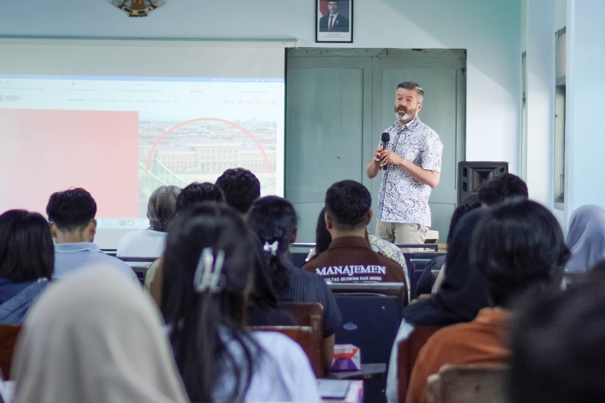
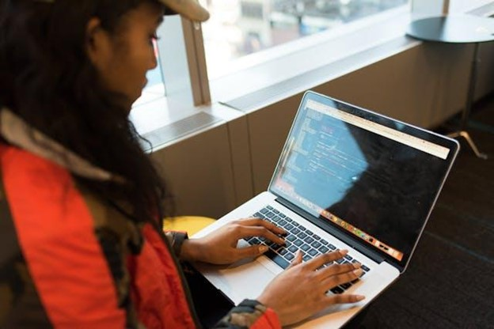

fakultas di perguruan tinggi yang fokus pada pendidikan dan penelitian bidang ilmu eksakta, teknologi, teknik, dan matematika (STEM)
ExploreUniversitas Pignatelli Triputra adalah kampus dengan konsep "Link and Match" dengan dunia industri merujuk pada hubungan yang erat antara pendidikan tinggi dan sektor industri untuk menghasilkan lulusan yang siap kerja dan relevan dengan kebutuhan pasar. Karena UPITRA mempunyai hubungan erat dengan Triputra Group dan Persada Capital Investama. Konsep ini menekankan pentingnya kolaborasi antara institusi pendidikan dan dunia usaha dalam merancang kurikulum, magang, pelatihan, serta penelitian yang mendukung pengembangan keterampilan dan pengetahuan yang dibutuhkan oleh industri.
Baca SelengkapnyaAplikasi PreXa adalah AI Smart Risk Prediction CVD, dengan Fitur Utama adalah Analisis resiko kardiovascular.
Virtualisasi Lingkungan Kampus Universitas Pignatelli Triputra Menggunakan Teknologi VR 3D.
Kuliah Di Upitra Murah Dan Bisa Gratis. Tidak Perlu Kuatir Kuliah Mahal!
Klaim BeasiswaKamu tinggal menyiapkan Identitas, Ijazah, dan Foto. Langsung datang ke bagian Admisi Upitra.
DaftarkanMenjalani hidup dengan transparan dan jujur.
Menghasilkan karya yang lebih dari yang diharapkan dalam situasi apapun..
Menempatkan kemanusiaan dan tujuan yang lebih mulia diatas kepentingan pribadi.
Menjadi pribadi yang rendah hati, membuka diri, dan terus memperbaiki diri.
Pada era sekarang, globalisasi di dunia pendidikan sangat kuat. Universitas Pignatelli Triputra (UPITRA) membuka kesempatan dan memperluas posisinya di kancah pendidikan tinggi internasional melalui kemitraan strategis lintas negara. Pada Jumat, 17 Maret 2026, UPITRA secara resmi menandatangani Memorandum of Understanding (MoU) dengan Ateneo de Zamboanga University (AdZU), Filipina. Langkah ini me

